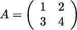
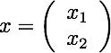
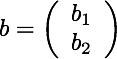
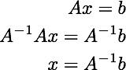
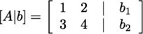
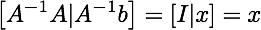

Date & Time: July 22, 2012
Location: home
Computing context: /Desktop/Research/CppHenyeyCode/src, /Desktop/Research/BodenheimerCode/UnalteredCode
To Do Today:
Modifying Peter's code to output info on the (what in Helena are referred to as A, B, S, Sum, InverseS) matrices in the midst of the 'fancy' solution method.
Mostly commenting his code to help me figure out which cryptically named variables correspond to my A/B/etc. matrices so that I can try to compare their values b/w the two codes.
This is no trivial task.
I'm figuring out that the GIRL subroutine in Peter's code does something a bit more complicated/involved than just inverting a matrix.
Let's define some arbitrary matrix A as (eqn1):

And let's define some vector of unknown quantities, x, that we want to solve for as (eqn2):

Finally, let's say we know that Ax = b, where b contains some known values b1 and b2 (eqn3):

One way to solve for x is (eqn4):

So, in other words: invert A, then multiply A^-1 and b, and you'll get your x values.
There is, however, another way to do this... if I remember correctly.
First, you construct a matrix that looks like this (eqn5):

Then, you perform Gauss-Jordan elimination to turn the left-hand (A) part of that matrix into the identity matrix. You carry along the b values through all of those eliminations. By the time you've turned the A part of the matrix into the identity matrix, you will have simultaneously "multiplied" the "b" part of that matrix by A^-1. In other words, you will have solved for the x values. If you want to say this in math, I guess you'd write something like this (eqn6):

This is what I suspect the GIRL subroutine is doing. The advantage of doing it this way (as opposed the the way I've implemented it in Helena, where you first invert A, and then multiply A^-1 against the various matrices of interest) is that the brute-force Gauss-Jordan matrix inversion requires n^2 operations (where n is number of individual elements in A). On top of that, multiplying A^-1 by another vector requires another n arithmetic operations. When you do it Peter's way, you have to do the n^2 elimination process every time you want to multiply A^-1 with another vector. On the other hand, though, you don't have to tack on those additional n operations after you invert A. (In Peter's method, you don't really 'preserve' the A^-1 values. There's no way to really 'see' what A^-1 looks like in his code.)
The reason I think Peter's code is using this approach is that the HA matrix (which is what gets sent to the GIRL subroutine most of the time) has dimensions iMax+1 by 2*(iMax+1). The "+1" is the row that holds the... A matrix? (which is really of dimensions 1 by iMax), while the first iMax rows hold the B matrix. (This is at any given mass cell, obviously. The HA matrix doesn't contain this info for all jMax mass cells.) And I *think* that the first iMax + 1 columns of HA are holding the A and B matrix values. The right hand side of HA *may* contain the values of the matrices that we want to multiply by TempSInverse. (But wait, how do you get from A and B to S??)
S = (C*B) + D
Sum = (C*A) + G
A = S^-1 * Sum
B = S^-1 * E
S*A = Sum <-- 1D matrix
S*B = E <-- 2D matrix
So, if you send GIRL(S|Sum), it will return A. If you send GIRL(S|E), it will return B.
In Peter's Henyey subroutine, maybe the HA and D matrix values are linked? It looks like the D matrix holds the G and E matrix values.